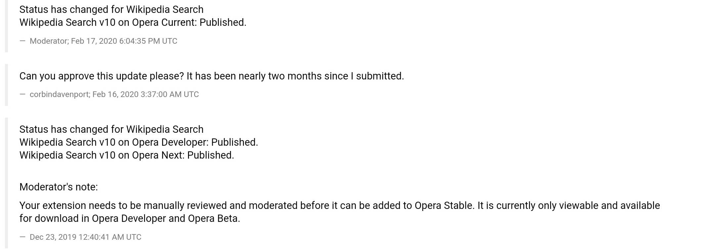

I develop several browser extensions in my spare time, which I’ve generally published across three browsers: Chrome, Firefox, and Opera. These browsers generally support enough of the same APIs that the actual software development isn’t difficult. However, each browser has its own add-ons repository with different requirements and review guidelines, which does eat up my time.
For most of the time I’ve developed extensions for Opera, submitting and updating them through Opera’s repository hasn’t been difficult. This changed sometime last year, when none of the updates I would submit would actually be reviewed for approval. This first happened with my Wikipedia Search extension, where I submitted v10 on December 23rd, 2019, then wasn’t actually approved until February 2020 when I contacted the reviewers myself.

I also released several three updates for my NoPlugin browser extension during 2020: v6.2 in February, v6.3 in September, and v7.0 in December. Even though each update was submitted to Opera at the same time as other browsers, v6.2 is still the most recent version that has been approved by Opera.
Besides the apparent lack of a review team, Opera has also increasingly become a terrible company in general. A division of Opera was scamming low-income people in Africa with predatory loans, for example.
Because of these reasons, I’ve decided to pull all my extensions from Opera (NoPlugin, Peek, and Wikipedia Search), effective immediately. Opera has no mechanism for me to notify this change to people using my extension, especially since I can’t send out updates, so most of them won’t see this message. If you’re affected by the removal, I recommend switching to Firefox or Chrome(ium), which I will continue to support.